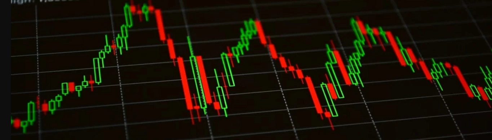
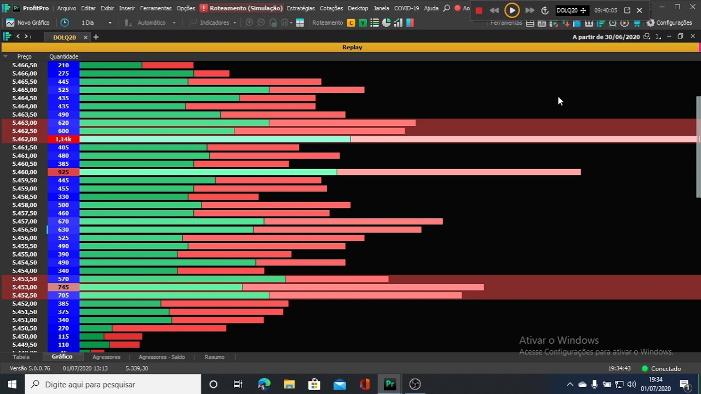
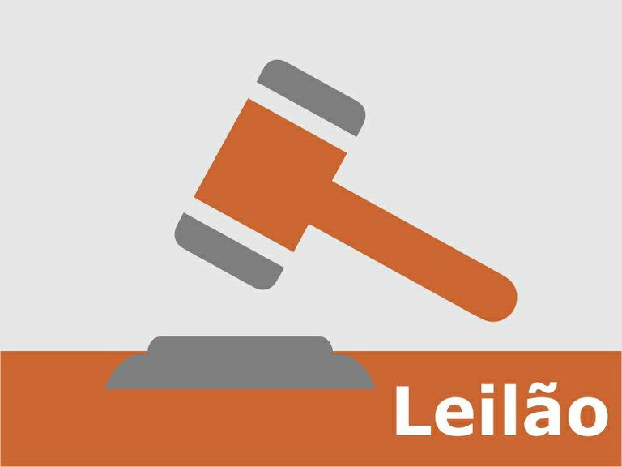
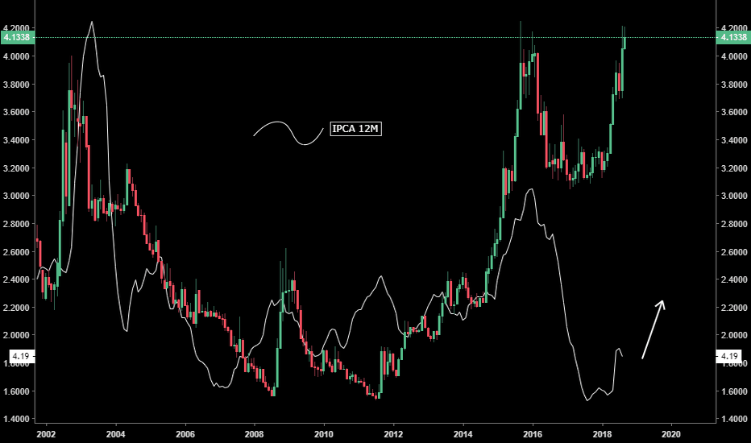

Curso do Zero À Consistência - Adam 12 Trades
Neste curso completo de Day Trade, você irá aprender tudo sobre a modalidade, como Vantagens e Riscos, Time Frames, Price Action, Setups, Análise Técnica, Planejamento, Curva de Aprendizado e muito mais.
Além disso, vai compreender tudo que é preciso para se tornar um day trader, seja como atividade principal ou secundária. Ao longo do curso também verá formas de se operar na prática, e descobrirá as melhores técnicas de análise e quais os ativos mais operados.
Tópicos abordados e exaustivamente treinados durante o Curso:
-
Agressões
Aprenderá a observar, principalmente através da ferramenta Times And Trades, a disputa entre compradores e vendedores, quem está mais empenhado nesta batalha e assim, saber antecipar com maior acertividade o lado mais provável para o qual o preço do ativo irá se desenvolver.
-
Volume Dominante
Ensinaremos a você como analisar o volume do mercado no momento das suas entradas. Desta maneira, será muito mais fácil identificar tanto o lado mais forte na queda de braço quanto a probabilidade do trade andar mais ou menos pontos nas suas operações.
-
Leilão
O leilão é um momento muito importante para quem analisa o mercado. Aqui você aprenderá a observar como os players mexem com o mercado antes mesmo dele abrir, identificando suas possíveis intenções para o dia, antes até da abertura do mercado.
-
Pontos Importantes no Gráfico
Passaremos para você o que há de mais importante a se observar nos gráficos, pontos de defesa, pontos onde há muito risco de reversão, pontos onde o trade anda com mais facilidade... Tudo para seu aperfeiçoamento estará aqui!
Investimento
R$ 459,90 - À Vista
Ou
12x de R$ 35,00